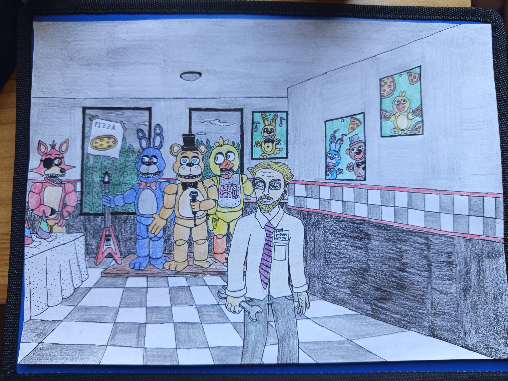
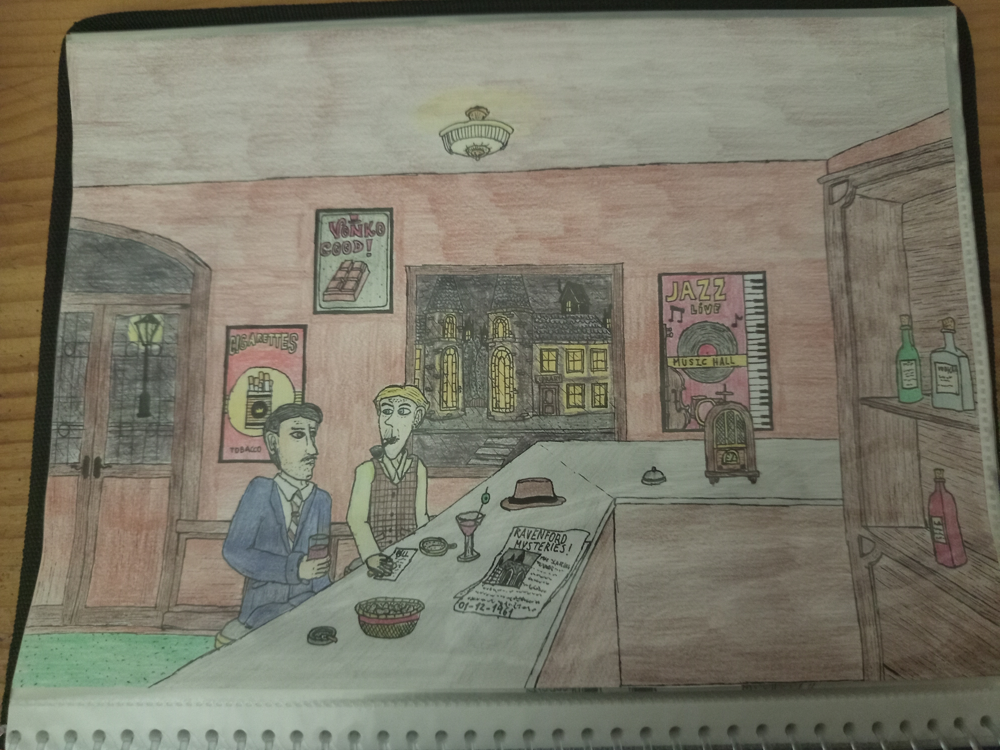

William Afton is the last owner of Freddy Fazbear's Pizza, he has a doctorate in mechanics, engineering and of course technology. He was named owner of the establishment and designer of Fazbear Entertainment in 1964. One year later he introduced the robotics to the entertainment at family restaurants, as far as we know about this man, we know that he suffered some kind of mental illness gradually according Doctor Alexander notes. He also stated to experience lucid dreams frequently, most of them related to the many times mentioned "Green Saturn".
It is theorized that William Afton is actually Roger Schmidt, a man in his 20s who went missing in 1963. According to Michael Schmidt, he went missing the day he went to Wormwood Island and see what was going on, so The Blackwood Committee caught him and torture him for several days. In order to leave him alive and to keep silent, The Blackwood Committee ordered him to change of name and identity and so becoming William Afton. Despite the fact of William being missing in 1999, it is confirmed that this man committed murder killing the 5 children at Freddy's, anyway, he was never found, acording to Mike, he stated that he was... "Spring-locked?" or something like that, whatever that means.
